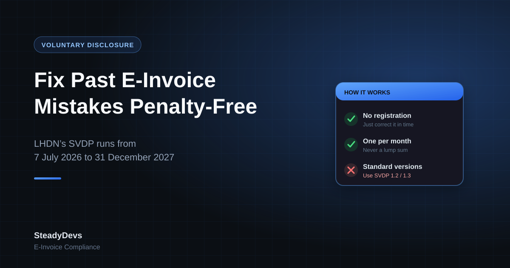

The E-Invoice Voluntary Disclosure Programme: How to Fix Past Mistakes Before 2028
Almost every business that has gone live with e-invoicing has a month it would rather forget. A consolidated e-invoice that went out late, or not at all. A batch with the wrong classification code. Buyer addresses that were never complete.
LHDN has given businesses a clean way to put that right. The e-Invoice Special Voluntary Disclosure Programme (SVDP) runs from 7 July 2026 to 31 December 2027. Under it, LHDN won't carry out compliance reviews or impose penalties or prosecution on the e-invoices you disclose.
Sources: LHDN's e-Invoice implementation timeline (updated 30 August 2026), the e-Invoice Specific Guideline v4.9 (7 September 2026) and the e-Invoice FAQ (4 September 2026). This is a plain-language summary, not tax advice; confirm your own position with your tax agent.
Who It's For
Section 17 of the e-Invoice Specific Guideline covers taxpayers who:
- didn't submit, or missed submitting, e-invoices for any period since their mandatory date;
- submitted e-invoices that contain errors or don't meet the specifications;
- haven't submitted any e-invoices at all since their mandatory date; or
- are undergoing, or have been told they will undergo, an LHDN e-invoice compliance review.
How It Works
There's no registration or application. You take part simply by correcting the non-compliance within the programme period, in the way LHDN specifies:
- For e-invoices with errors: issue a credit note e-invoice to reverse the incorrect one, then issue a new e-invoice with the correct details. LHDN's FAQ gives the example of a bookstore that used a default classification code and corrects it this way.
- For missed consolidated e-invoices: submit them one per month, for the month the transactions happened. LHDN's example of a company that missed January to April 2026 needs four separate consolidated e-invoices, not one covering all four months.
- For transactions left out of a consolidated e-invoice: either credit the original and issue a complete replacement, or issue a separate consolidated e-invoice for the omitted transactions.
The Technical Detail That Trips People Up
SVDP submissions must use special e-invoice document versions: "SVDP 1.2" if you submit without a digital signature, or "SVDP 1.3" with one. These versions are only for voluntary disclosures and can't be used for normal submissions.
That matters if your e-invoices come from software. A system built to send the standard versions won't produce SVDP submissions on its own. Check with your provider or developer before you assume you can disclose through your usual system.
An e-invoice still within its 72-hour cancellation window doesn't need the SVDP. You can cancel it and issue a corrected one in the normal way.
When the Protection Doesn't Apply
- If the disclosed e-invoices themselves don't comply with the requirements. A disclosure has to be done properly to count.
- If the case involves fraud, wilful default or negligence.
- If you rely on your vendor to take the blame. LHDN's FAQ is clear that responsibility stays with the taxpayer even when a service provider or system vendor caused the problem, though you can still use the SVDP to fix it.
Each company in a group must make its own disclosure; there's no single group submission. You can make further disclosures if you find more problems later, as long as they're within the programme period.
A Practical Clean-Up Plan
- Reconcile. Compare your sales and purchase records month by month against what MyInvois shows as validated. Gaps and mismatches are your disclosure list.
- Check the data, not just the totals. Classification codes, buyer details and tax types are common silent errors.
- Fix the cause first. Disclosing past months while the same error continues just creates next month's disclosure.
- Submit month by month in the SVDP versions, and keep a record of what you disclosed and when.
- Finish well before 31 December 2027. Validation problems take time to resolve, and the year-end will be busy for everyone.
Running an Older System That Can't Talk to MyInvois?
We connect legacy .NET, SQL Server and custom POS systems to MyInvois without a rebuild. Get an honest view of what your system needs and what it costs.
Talk to UsFrequently Asked Questions
No. LHDN's FAQ says no separate registration or application is required. You correct the non-compliance within the programme period using the specified method and document versions.
No. Corrections made before the programme started continue to be recognised, provided they were made in good faith and are accurate.
No. Missed consolidated e-invoices must be submitted per month of transaction, not as a lump sum across months.
Yes. LHDN treats compliance as the taxpayer's responsibility even when a vendor is involved, but you can use the SVDP to correct the errors.